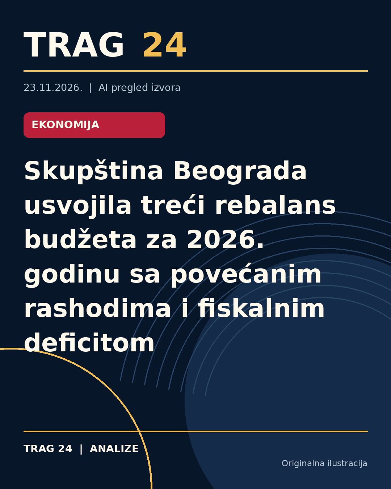

Skupština Beograda usvojila treći rebalans budžeta za 2026. godinu sa povećanim rashodima i fiskalnim deficitom

ŠTA SE DOGODILO
Odbornici Skupštine Beograda usvojili su treći rebalans budžeta za 2026. godinu kojim su rashodi povećani na 215 milijardi dinara, a ukupan budžet grada i gradskih opština iznosi 231,9 milijardi dinara. Budžetski deficit predviđen ovim rebalansom iznosi približno devet milijardi, dok je fiskalni deficit oko deset milijardi dinara. Za rebalans je glasalo 60 odbornika, 28 ih je bilo protiv, dok niko nije bio uzdržan, a dvoje odbornika nije glasalo.
HRONOLOGIJA
Prethodno su prvi i drugi rebalans budžeta Beograda uvećali budžet grada na 193 odnosno 202 milijarde dinara. Novi rebalans se zasniva na izvršenju budžeta za prvih deset meseci i projekcijama planiranih prihoda i rashoda do kraja godine. Projekcija uključuje i povećanje transfernih sredstava i sopstvenih prihoda grada i opština. Grad planira zaduženje od 5,77 milijardi dinara i otplatu glavnice postojećeg duga od 5,27 milijardi dinara. Iz republičkog budžeta biće preneto 12,73 milijarde dinara.
ŠTA NAVODE IZVORI
Katarina Čubrić, gradska sekretarka za finansije, objasnila je da se okviri budžeta nisu menjali već je došlo do povećanja transfernih sredstava i sopstvenih prihoda, kao i relokacije sredstava radi pokrivanja obaveznih rashoda do kraja godine. Odbornik Miloš Pavlović iz Narodnog pokreta Srbije naveo je da rebalans budžeta projektuje nerealno visoke prihode u odnosu na evidentirane, te da grad Beograd troši više nego što zarađuje. Takođe, ukazao je da Beograd učestvuje s oko 45% u BDP Srbije, te da je značajan deo budžeta na osnovu transfera sa drugih nivoa vlasti. Odbornici opozicije izrazili su kritike ka javnim preduzećima i načinu na koji se troše sredstva, kao i ka nekim investicionim izdacima u budžetu.
ŠTA JE POTVRĐENO
Potvrđeno je da je treći rebalans budžeta Beograda usvojen sa ukupnim budžetom od 231,9 milijardi dinara, viđenim fiskalnim deficitom, kao i projekcijom prihoda i rashoda zasnovanom na dosadašnjem izvršenju budžeta. Takođe je potvrđeno da su odbornici izglasali povećanje zaduženja i prenosa sredstava iz republičkog budžeta. Faktografija o povećanju poreza na imovinu i ulaganjima u evropsko društvo Eurofima za finansiranje železničkih voznih sistema takođe je potvrđena.
ŠTA NIJE POTVRĐENO
Nema potvrda o konkretnim nezakonitostima unutar javnih preduzeća, niti o eventualnim zloupotrebama novca, što su tvrdnje opozicionih odbornika. Takođe nije potvrđeno da su projekcije prihoda neobjektivne, već su one zasnovane na zvaničnim procenama finansijskog izveštaja. Nije potvrđeno ni tačno šta će konkretno biti rezultat ulaganja u sistem integrisane bezbednosti ili drugih navedenih investicija.
ŠTA OSTАJE OTVORENO: Ostaje pitanje dugoročne finansijske održivosti budžeta Beograda i uspešnosti planiranih ulaganja. Takođe je otvoreno dalje praćenje realizacije budžeta, efekata povećanja zarada u javnim preduzećima i drugih investicionih projekata na građane Beograda i finansijsku stabilnost grada. Posebno je neizvesno kako će se odraziti upravljanje povećanim zaduženjem i fiskalnim deficitom u narednom periodu.
Izvori
- https://www.danas.rs/vesti/ekonomija/prema-rebalansu-budzet-beograda-232-milijarde-dinara/
- https://www.novosti.rs/beograd/vesti/1674005/usvojen-rebalans-budzeta-grada-beograda-232-milijarde-dinara
Ova analiza je pripremljena uz pomoć veštačke inteligencije na osnovu javno dostupnih izvora. Navodi izvora nisu nužno nezavisno potvrđeni.